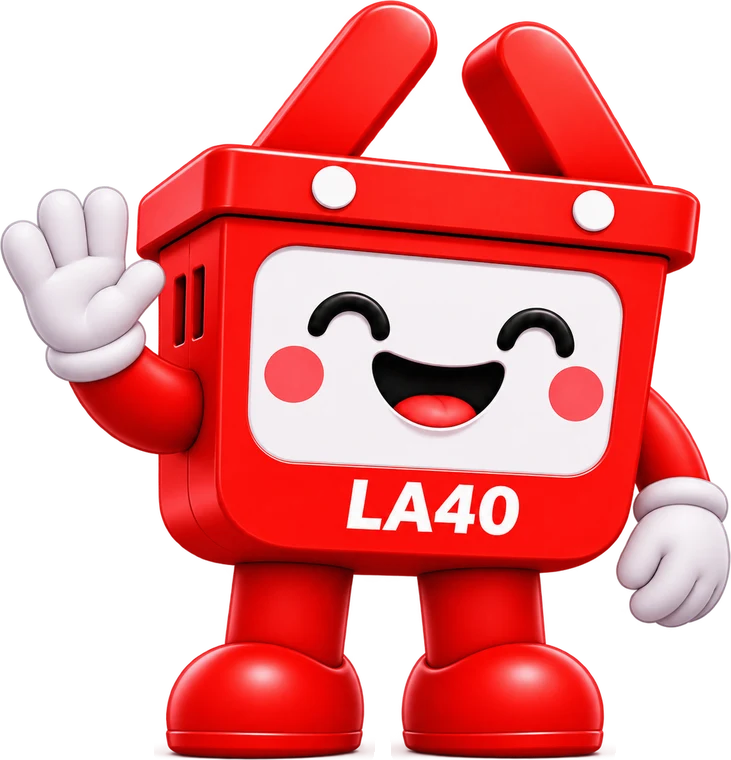
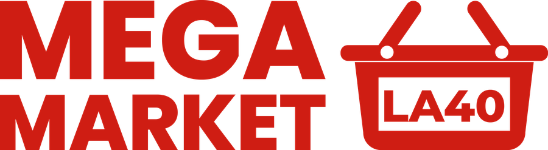
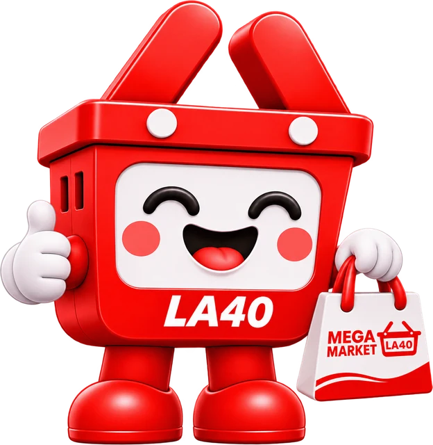
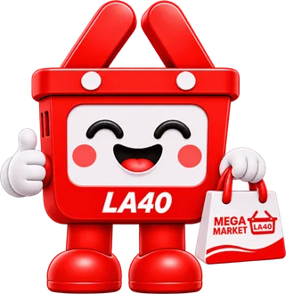
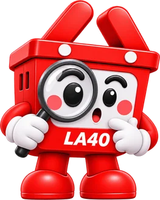
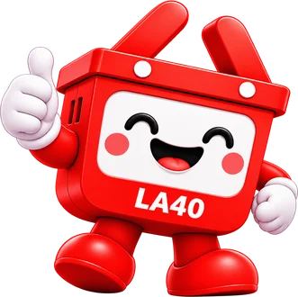
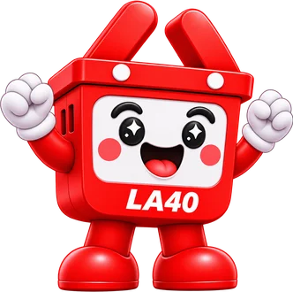
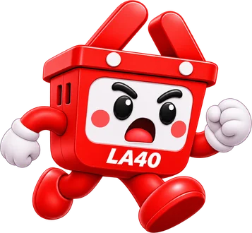
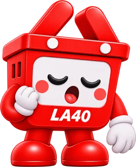

Visítanos
- Dirección
- Calle Héctor Cabrera, entre 28 de Mayo y Velasco Ibarra, Ventanas
- Horario
- Lunes a domingo, de 7:00 a 20:00
Sitio provisional
Supermercado de Ventanas, provincia de Los Ríos, Ecuador.

Mega Market La 40 es un supermercado de Ventanas, en la provincia de Los Ríos, Ecuador.
Nuestro trabajo es tener lo que tu hogar necesita cada día y atenderte con cercanía.
Esta es una página provisional: estamos preparando nuestro sitio oficial. Mientras tanto nos encuentras en nuestro local de Ventanas y en nuestras redes sociales.

#CF1D13El rojo oficial: logo, fondos de marca y títulos.
#A6170FSombras y detalles sobre el rojo.
#FFFFFFFondos y textos sobre rojo.
Poppins es la letra de Mega Market La 40.

Opsi es la cara amable de Mega Market La 40. Cada detalle suyo tiene un porqué.
Es el símbolo de la tienda, el lugar donde empieza cada compra. Opsi es la canasta del logo, pero con vida propia.
Es el rojo oficial de Mega Market La 40, el color con el que nos reconoces en la tienda y en redes.
Sale de OPeraciones + SIstema, el trabajo que mantiene la tienda en marcha, y es un juego con «posi», la forma ecuatoriana de decir «sí, claro». Por eso su lema es «Operaciones · todo posi».
 Saluda
Saluda
Con su bolsa Con cariño
Con cariño Anuncia
Anuncia
Investiga Se sorprende
Se sorprende Guiña
Guiña
Aprueba
Celebra Piensa
Piensa
Corre
Descansa¿Quieres formar parte del equipo de Mega Market La 40? Escríbenos y cuéntanos quién eres, qué puesto te interesa y tu experiencia.
+593 99 301 6905 · megamarket40contacto@gmail.com